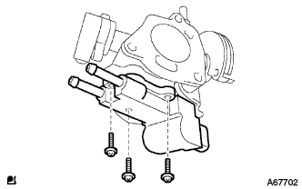
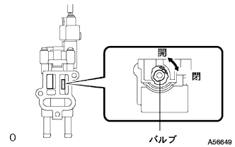

スロットルボデーアイドルスピードコントロールバルブを取りはずす。
スロットルポジションセンサおよびアイドルスピードコントロールバルブのコネクタを切り離す。
ボルトおよびナット2個をはずし、アクセルレータコントロールケーブルブラケットおよびスロットルボデーASSYを取りはずす。
インテークマニホルドよりガスケットを取りはずす。
スクリュ3本をはずし、アイドルスピードコントロールバルブおよびガスケットを取りはずす。
 |
|  |
作動点検(イニシャルチェック)
ISCV単体に車両のワイヤハーネスを接続する。
イグニッションスイッチON時、バルブの作動を確認する。
- 基準
- 中立(50%開)→全閉→全開→中立(50%開)
- □ 参 考 □
- 0.5秒以内で作動する。
|  |